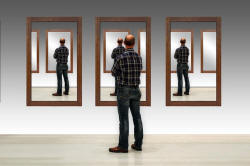

Unit 5: Tutorials, seminars and one-to-one sessions

Tutorials and seminars are expensive in terms of trainer time so it's
important to make the most of them. A series of thirty-minute,
one-to-one tutorials with 12 participants burns through six hours of
trainer time without considering any preparation or follow-up record
keeping (both of which are also important).
As with most things in teaching, good planning is often the key to
the efficient and effective use of time.
 |
Open-door policies |
If you want off-the-cuff, short and possibly unfocused meetings
with participants, have an open-door policy so they can drop in and
interrupt important planning and liaison meetings at any time.
Alternatively, be available only at specified times so that doesn't
happen (too often).
If you feel that being available all the time is important, by all
means try to be but the pressure is on you to plan and deliver a
coherent and useful training programme and if you never get quality
time alone to think, that's unlikely to happen.
Barring emergencies and critical events in participants' lives
(which seem to happen rather too often on most courses) a better and
more efficient use of your time is to have occasional one-to-one or
one-to-small-group tutorials which can be properly planned into the
timetable and prepared (on both sides) with clear agendas.
This short unit is intended to help you do that.
 |
What are tutorials and seminars for? |
We'll deal here with only the most popular purposes of these
meetings and try to distinguish between a tutorial and a seminar as
we go along.
Training courses differ dramatically as do the needs of trainees and
the demands of courses so you may well think of other purposes for
tutorials and seminars which match the setting in which you are training and the
aims of what you are doing. That's fine because similar
considerations apply whatever the function of the meeting.
Here's a short-list of possible purposes of tutorials:
- To evaluate progress
These are usually one-to-one only because you need to address each individual separately and you and the trainee probably do not want other people to hear or be involved. They are not seminars because of their nature which is the opportunity for you to meet with only one course participant and you aren't discussing the content of the course, you are discussing the participants progress and giving them a chance to ask questions and clear up problems.
There may well be a case for a group summary session which looks at the progress being made overall and how people have responded to the demands of the course in general but that process is not considered here as a tutorial. - To provide feedback on teaching or written work
Both of these topics are considered in depth in Unit 6 of this course so we won't dwell on them here. These are normally one-to-one sessions, too, so are tutorials for the most part. Even when they are group events, they still are better described as tutorials because their function is for you put people right rather than discuss possibilities and views. - To help with planning and research
Different trainees need different levels of support and it is frequently not possible to address more than one person in this regard.
However, it is sometimes the case that there are subgroups within the group who have needs and abilities in common and who need the same level of support so it is possible to combine people which may make the meeting less tense and will certainly be a more efficient use of your time. This is a group tutorial because you are the only expert in the room.
It is also possible that you have set differentiated tasks to complete so you have already identified subgroups and can get the members together to review how they are doing. That, too, is time efficient. - To operate as seminars focused on aspects of course content
This is an expensive use of trainer time but, if it's available and the other members of the group are gainfully occupied, can be time very well spent.
Below, we have some examples of the agenda for something like this but the focus can be very specific or much broader. The advantage is that you are dealing with small numbers of trainees who have undertaken similar or identical tasks and are now charged with reporting on what they have learned and discussing outcomes together under your leadership. This is what qualifies the meeting as a seminar.
We'll consider all of these but under headings of commonalities in all cases.
 |
Pre-meeting agendas |
If you don't have an agenda for your meetings five things happen, none good.
- The meeting meanders across the landscape never following a true course and often doubling back to consider what has been forgotten. Time is taken up chasing non-objectives and following sidetracks.
- It is impossible for anyone to prepare for such a meeting because we don't know what to prepare for. Time is further wasted because people have to think on their feet as each new topic for discussion comes up.
- The meetings will be different for everyone and some people will have a better experience than others.
- It is impossible to have a general feedback summary of a series of meetings because they all followed different tracks.
- Incoherence is almost guaranteed.
One the other hand, agendas can be restrictive and people may feel unable to raise issues that are important to them but not on the agenda. That's a lost opportunity so an effective way forward is to have an agenda with space for the participants to add items. It may look something like this:
| Progress revue tutorials agenda (please see the timetable for these). | |
| 1 | Assess progress on the course as a whole |
| 2 | Identifying how your teaching has changed |
| 3 | Identifying targets for improvement |
| 4 | Review your progress with the project |
| Please add anything you would like to discuss below and get this to me in the morning of the day before our meeting. | |
| 5 | |
| 6 | |
| Your name: | |
Making sure that people assemble their thoughts before you meet is also advisable so the invitation to a tutorial meeting should include a task of some kind such as:
The agenda for our tutorial meeting is
attached.
Before we meet, please consider:
- On a scale of 1 to 9 (9 being the best), how do you rate your progress so far?
- Can you think of three ways your teaching has improved or will improve?
- What do you still need to work on?
- Where are you with the project? Are you on course to complete it on time?
There is space on the agenda to add issues you want to discuss but I would like to know about them in advance so please get a completed copy of the agenda back to me in the morning of the day before we are scheduled to meet.
Thanks
Tutorials are not just progress reviews, of course, and the agenda and associated tasks may be radically different. Here's an example of a pedagogically focused agenda and task for a seminar with a group of three or so participants. The assumption behind this is that all the trainees have read the same text but you are getting them to focus only on sections of it for presentation and discussion:

Because all the group have read the same text, you can be sure that people's presentations will be understood but the evaluations is where differences may arise. This allows for discussion and consolidation of knowledge. That's what seminars are for, of course.
Other tutorials or group seminars may be forward looking rather than drawing on the
past and focused on activities completed before the meeting.
An agenda and task for this sort of meeting might look like this:
Dear ..............
For our meeting on .........., please email me the following before the end of .......... and bring hard copies with you:
- Your list of aims and objectives.
- The procedural grid for the lesson
- The problems you anticipate may arise
- The assumptions you are making about the group's current abilities
Please also feel free to send me a list of particular points you would like to cover or worries you may have.
Thanks
This way, you can assess some of the work before the meeting and be well prepared with sound advice and constructive criticism. Trying to respond to a set of documents like this off the cuff is usually a recipe for failing to spot important issues and giving ill-considered advice in nobody's interests.
 |
Meeting time |
Before you meet, there are some issues to consider whether the meeting is one-to-one or with a small group.
- Formality

- If you sit behind your desk in your workspace, you are
establishing the fact that this is formal and may include an
element of assessment. That may, of course, be the message
you want to send but it's as well to be aware of it.
If you sit around a table, sharing the space, you are signalling that this is support, discussion and help. It may still be quite formal, especially if the table is part of your workspace. If the table 'belongs' to none of you, the situation is much more equitable.
If you sit side by side in a one-to-one tutorial, you are in danger of being too much of a chum and too little of a trainer.
This is an important issue because this parameter is set in stone at the beginning of any meeting. - Privacy

- It is rarely appropriate to meet in public spaces where you
may be overheard. Not only is it distracting, it may also
make people less willing to speak honestly and openly.
If facilities are limited in your institution, as they frequently are, it is always possible to meet offsite (which means you have to buy the coffee) where privacy is guaranteed. That sometimes means you have to work a bit harder to maintain the correct level of formality and seriousness. - Turn taking

- This clearly only seriously applies to meeting with more than one
trainee. If there are only two people involved, you need
to make sure that, while you remain in charge of the
interaction, you give trainees ample opportunity to say what
is important to them.
You are the trainer and will normally be in charge of turn taking and there are three ways to invite a turn that you should know about:- Selection and constraint
As the chair, so to speak, of the meeting, you may select the next person to speak and select what they should speak about.
For example:
What do you feel about drilling, John?
Let's ask the person who did this in her last lesson how she thought it worked. Mary?
In these cases, the next speaker has been constrained in terms of the form of his or her turn by what you have said.
Both the speaker is selected and the topic constrained.
Selection may also be achieved through gaze, i.e., selecting the next to speak by making eye contact with them but is usually better done by nomination if people are looking at the floor. - Constraint only
You may signal the end of a turn by constraining the form of the next utterance but not selecting a speaker to perform it.
For example,
Does anyone have anything to add about learning style theory?
Does anyone want to try defending this proposition?
This constrains the next utterance to the expression of information or the expression of ignorance. - Open-ended turn passing
You may do neither of the above and simply signal the fact that you are inviting an unconstrained and unselected contribution. For example:
Would anyone like to raise any other points?
Does anyone have any questions about anything we've discussed?
Beware, however, that this comes at an appropriate time because it will often be greeted with an embarrassed silence.
- Selection and constraint
- Equality

- Nobody is under any illusions that most tutorials and
seminars are
equal-partnership events because, after all, you are being paid
to lead. It is not useful to try to suggest otherwise
because that is transparently untrue.
The difference, such as it is between group tutorials and seminars is that the latter involve participants in discussion of issues rather than being events in which you teach content. The content should be known and the seminar acts to reinforce and consolidate understanding.
Within that constraint, however, it is important to give everyone space even if that leads to a bit of unfocused and (for you) frustrating rambling.
People have different ways of making a point and one of those is to circle around it considering peripheral matters before homing in on the core idea. It's sometimes important to allow this kind of dithery focusing.
In one-to-one tutorials it is even more useful to allow people time to develop their thoughts and that they are prepared to do so is one of the advantages of your having given them an agenda and a task in good time before the meeting.
In group tutorials or seminars you simply have to use your already well honed and practised skills in involving quieter people and restraining the more voluble and confident.
Your leadership role makes that reasonably simple to do.
 |
Post-meeting tasks |
Whatever kind of meeting you have had, but especially if it was a
one-to-one progress tutorial, it's important to have some kind of
record. This both values the event for the participants and gives
you and them a way of seeing if you agree about what was said and
what happened.
Moreover, the report you write is a simple way of preparing the
agenda for your next meeting especially if it is going to cover
similar ground.
In a short one-to-one tutorial, it's a comparatively simple matter
to make notes during the event and / or immediately afterwards from
which you can write a brief report.
Reports of seminars which are subject based do not have to be
elaborate and should simply say what happened and be flattering
about people's contributions where that's possible. It is
unlikely to be an assessed event.
Reports of progress tutorials should be shared with the trainee involved so there's an opportunity to put any assumptions right. This will alert you to having got the wrong end of the stick sometimes and allows the participant to have an equal say.
 |
Evaluating success |
Here you need to ask yourself a few questions to focus you on how
things went. The questions may vary depending on the nature of
the meeting but you are well enough experienced at
self-evaluation not to need much help in inventing better questions.
You might start with some generic ones:
- Did I manage to provide all the information I wanted to get across well enough?
- Was contribution reasonably equitable?
- Did people have something identifiable (and useful) to take away?
- How will the outcomes of this event inform planning for the next one?
- Have I got an agreed record of what happened?
- Was the agenda followed or will it need amending before I use it again?
Now think of a few more and make your notes. It takes little time and has positive effects.
|  |
Self-evaluation |
Tutorials and small-group seminars form a part of nearly all teacher training courses even when they are seen as peripheral to the main course components. They shouldn't be, of course, because if they are part of the course, they should be integrated into its content.
If you are doing this course because you are preparing for
training on a course of your own, it is a good moment to sit back
and think about how you are going to plan, integrate and carry out
tutorials and seminars.
The two columns on the right of the checklist are for you to insert
your plan regarding the logistics of organising tutorials
(timetabling, agendas, records etc.) and the areas from this guide
that you feel need particular attention (if any).
You can download a check-list and action plan here to start you off.
The assumption that you will have one-to-one tutorials to debrief people after any teaching practice is written into this course and forms part of the core of Unit 6 so those are not mentioned on the checklist.